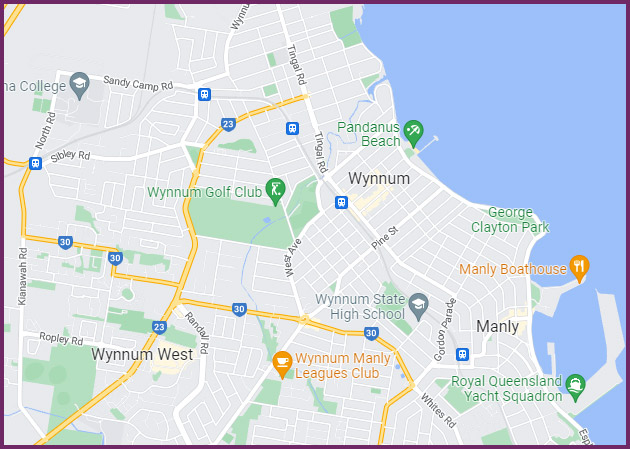

What is it?
Bayside Bubble is aimed at 10-year-old cool kids who are interested in active sports.
The site is a community activity information board for kids of the bayside community of Wynnum Queensland Australia.
Location
Wynnum is located south of Brisbane near the Brisbane River outlet into Moreton Bay.
Author
Bayside Bubble has been made by Daniel Lopez for the DBX111 unit for the Queensland University Of Technology.
| See me on LinkedIn | |
| See more on Github |
References
All images have been made or taken by Dan Lopez. Map images have been provided by google maps.
The following private venues have been used on the site
www.bounceinc.com.au thejungletribe.com.au